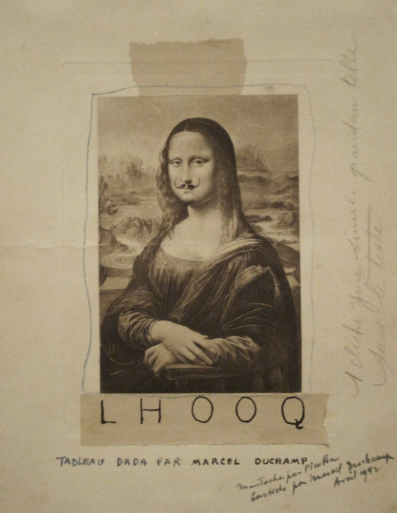

L.H.O.O.Q.
Marcel Duchamp · 1919 · Pencil on reproduction · 19.7 × 12.4 cm
In copyright. Look and learn: shown for study, not for download.
Duchamp took a cheap postcard of the Mona Lisa in 1919, drew a moustache and beard on her in pencil, and wrote a title whose letters, read aloud in French, make a crude sentence. When Francis Picabia wanted to print it in his magazine 391 and could not wait for it to arrive from New York, he drew the moustache himself, with Duchamp's permission, and forgot the beard. Duchamp added the missing beard to Picabia's copy in April 1942, in black ink with a fountain pen.